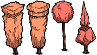

| Marble Tree | |
|  |
|
| Tool Required | |
| Resources | |
| Renewable? | No |
| Common Biomes | Chess |
| DebugSpawn | "marbletree" |
| “ | I don't think an axe will cut it. | ” |
| –Wilson | ||
The Marble Tree is a tree that can be mined with a Pickaxe, Opulent Pickaxe or Pick/Axe for Marble. It gives out 1-3 Marble once mined. It often appears in Adventure Mode in chess biomes. It usually spawns on Checkerboard Flooring, where Evil Flowers surround it. Marble trees are not flammable.
Marble Trees often spawn around the Wooden Thing.
")
| Naturally spawning world objects | |
| Plants | Berry Bush • Carrot • Cave Banana Tree • Cave Lichen • Flower (Evil Flower, Fern) • Grass • Light Flower • Lureplant • Mandrake • Mushrooms • Mushtree • Plant • Reeds • Sapling • Spiky Bush • Tree • Totally Normal Tree |
| Mobs and Mob Housing | Beehive • Hound Mound • Pond • Pig Fortress • Pig House • Pig King • Pig Torch • Rabbit Hutch • Rundown House • Slurtle Mound • Spider Den • Spilagmite • Splumonkey Pod • Tallbird Nest • Walrus Camp • Worm Hole |
| Inanimate | Ancient Pseudoscience Station • Ancient Statue • Basalt • Boulder • Gramaphone • Grave • Harp Statue • Headstone • Suspicious Dirt Pile • Marble Pillar • Marble Tree • Maxwell's Door • Maxwell Statue • Maxwell's Light • Merm Head • Nightmare Light • Nightmare Lock • Nightmare Throne • Obelisk • Ornate Chest • Pig Head • Pillars • Relic • Sinkhole • Skeleton • Stalagmite • Touch Stone • Thulecite Wall |
| Things | Box Thing • Crank Thing • Eye Bone • Metal Potato Thing • Ring Thing • Wooden Thing |


{kind=link}
{kind=link}